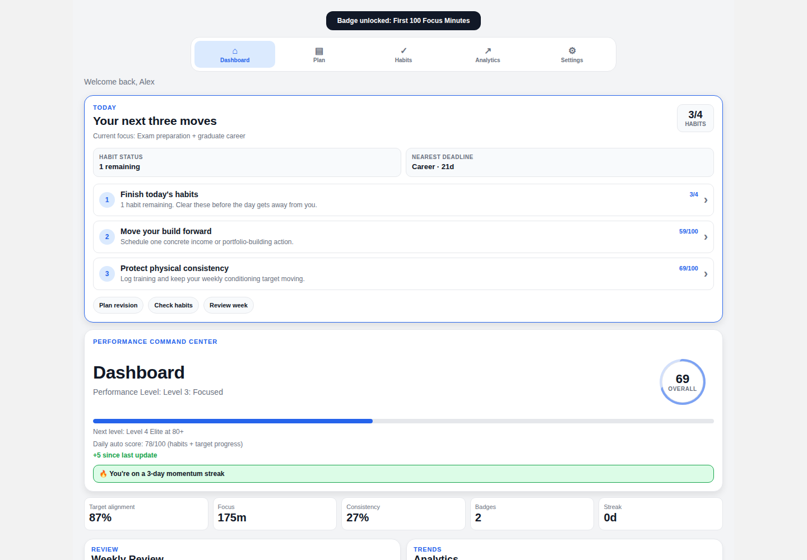

Student Toolkit OS
A React Native / Expo productivity system that turns academics, habits, fitness, project work and career development into one coherent weekly workflow — with an instant recruiter demo, adaptive planning logic and recoverable local state.

Designed to be understandable in the first minute
The project now opens with an Interactive Portfolio Demo that seeds realistic goals, deadlines, habit history, analytics and revision data. A recruiter can explore the finished experience immediately instead of spending time setting the app up.
Ranks the next three useful actions from current habit progress and lower-scoring performance areas.
Weights study time using exam runway, available days, intensity and confidence by subject.
Uses real local date windows so stale or duplicate records cannot inflate consistency.
Snapshots an existing local workspace, isolates sample data and restores the previous state when demo mode ends.
The challenge
Students often split revision, habits, fitness, career development and personal goals across separate tools. I wanted to explore whether those workflows could feel like one product while staying useful without an account, hosted database or permanent internet connection.
The engineering challenge was not just adding screens. It was keeping a broad feature set coherent, persisted, recoverable and demonstrable while avoiding hidden backend dependencies.
What I built
- Interactive demo mode with realistic relative-date sample data and restoreable pre-demo state.
- Today command centre with three ranked priorities, habit status, nearest deadline and quick actions.
- Adaptive revision planning using deadline urgency, weekly hours, available days, intensity and per-subject confidence.
- Academic, fitness, projects/income and professional-development scorecards with targets and deadlines.
- Habit completion history, weighted difficulty, streaks and weekly reset behaviour.
- Weekly review, focus-session tracking and calendar-based analytics.
- Local notifications, PDF plan export and JSON backup/restore.
- Clean, dark and midnight dashboard themes.
Engineering decisions
- Local-first by design: core product flows use React Context and AsyncStorage instead of requiring a production account or remote personal-data service.
- Deterministic domain logic: revision planning, habit logic, date metrics and restore transactions are isolated from React Native APIs so they can be tested directly.
- Safer persistence: habit writes update a synchronous latest-value reference before React state and storage, avoiding stale snapshots during rapid interactions.
- Transactional restore: backup imports accept recognised keys only, validate JSON-looking values, preserve the previous state and roll it back if a storage write fails.
- Maintainability: the Today command centre and dashboard style system were extracted from the large dashboard route to reduce presentation logic in the main screen.
Verification
The public portfolio repository now has a repeatable CI gate rather than relying on manual confidence alone.
The portfolio-upgrade pull request passed lint, TypeScript, the regression suite and an Expo web export before being merged into the public demo repository.
Architecture
What this demonstrates
Student Toolkit OS now demonstrates more than cross-platform UI work. It shows how I think about product onboarding, shared state, failure handling, recoverability, test boundaries, date-sensitive analytics, maintainability and how to make a technical project easy for another engineer or recruiter to evaluate.